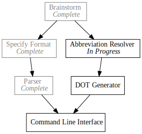

Day8 - Pando Abbreviations
Resolving abbreviations in the Pando file format
2019-02-14

Short day today, so instead of completing the DOT generator as I had planned, I split the task into two parts; the Abbreviation Resolver and the Generator itself. Today I am tackling the Abbreviation Resolver.
The Pando format specification has a quality of life feature which allows the user to specify dependencies as abbreviations of the full dependency name. To make the problem tractable, I defined the abbreviation as a camel case concatenation of one or more prefixes of words in an identifier. Read further in the specification post.
Implementing the abbreviation resolution was an interesting tour of Rust's string and iterator functions.
Splitting
Since each of the identifiers and abbreviations are compared pairwise, we need functions to split both of them. Identifiers are split on spaces. Easy enough.
pub fn split_identifier(identifier: &str) -> Vec<String> { identifier.split(" ").map(|part| part.to_lowercase()).collect() } #[test] fn identifier_split_works() { assert_eq!(split_identifier("Specify Format"), vec!["specify", "format"]); assert_eq!(split_identifier("DOJ Appointment"), vec!["doj", "appointment"]); }
Note: I force the identifier words to lowercase for easier comparison down the line.
Splitting the abbreviations was somewhat more complicated. The idea is to split
the abbreviation into sections that start with a capital letter. So SF would
split into s and f and DotA would split into dot and a. Similar to the
identifiers, I also lowercase the resulting components for easier matching.
pub fn split_abbreviation(abbreviation: &str) -> Vec<String> { let mut parts = Vec::new(); let remainder = abbreviation.chars() .fold(String::new(), |mut current, character| { if character.is_uppercase() && current.len() != 0 { parts.push(current); character.to_string() } else { current.push(character); current } }); if !remainder.is_empty() { parts.push(remainder); } parts.iter().map(|part| part.to_lowercase()).collect() } #[test] fn abbreviation_split_works() { assert_eq!(split_abbreviation("DotA"), vec!["dot", "a"]); }
Not super complicated. The majority of the calculation can be done in a fold iteration where the accumulate is the current string being built up. When a new capital letter is found, we push it into the parts vector that gets captured in the iteration closure.
Finally as cleanup, we add the remainder to the parts if it isn't empty, and return the lowercase versions of the parts.
Matching
Once we have a clean way to split the identifiers and abbreviations, determining if a given abbreviation is a match for an identifier is fairly simple.
pub fn abbreviation_matches(identifier: &str, abbreviation: &str) -> bool { let identifier_words = split_identifier(identifier); let abbreviation_parts = split_abbreviation(abbreviation); if identifier_words.len() != abbreviation_parts.len() { return false } let mut pairs = abbreviation_parts.iter().zip(identifier_words.iter()); pairs.all(|(abbreviation_part, identifier_word)| identifier_word.starts_with(abbreviation_part)) } #[test] fn abbreviation_matches_works() { assert!(abbreviation_matches("Implement Parser", "IP")); assert!(!abbreviation_matches("DOT Generator", "IP")); assert!(abbreviation_matches("DOJ Appointment", "DojA")); assert!(!abbreviation_matches("DOJ Appointment", "Doj")); }
If there are different numbers of identifier words or abbreviation parts, clearly we don't have a match. Otherwise I pair up the abbreviation parts with the identifier words and check if all of the abbreviation parts are prefixes of the identifier words. If any are not, the match fails.
Building the Lookup
Hooking it all together, we would like to cache these results in reverse direction, so that each task has a list of tasks that depend on it. DOT files specify dependencies from the dependency to the dependent task because that is the direction we want the arrows to point.
pub fn resolve_dependent_tasks(tasks: Vec<Todo>) -> Option<HashMap<String, Vec<String>>> { let mut dependent_tasks = HashMap::new(); for task in tasks.iter() { dependent_tasks.insert(task.identifier.clone(), Vec::new()); } for task in tasks.iter() { for dependency_abbreviation in task.dependencies.clone() { match tasks.iter().find(|task| abbreviation_matches(&task.identifier, &dependency_abbreviation)) { Some(dependency) => dependent_tasks .entry(dependency.identifier.clone()) .and_modify(|dependent_tasks| dependent_tasks.push(task.identifier.clone())), None => return None }; } } Some(dependent_tasks) } #[test] fn abbreviation_resolution_works() { let resolved_abbreviations = resolve_dependent_tasks(vec![ Todo::new(TaskStatus::Completed, "Brainstorm", vec![]), Todo::new(TaskStatus::InProgress, "Specify Format", vec!["B"]), Todo::new(TaskStatus::Waiting, "Implement Parser", vec!["SF"]), Todo::new(TaskStatus::Waiting, "DOT Generator", vec!["B"]), Todo::new(TaskStatus::Waiting, "Command Line", vec!["IP", "DG"]) ]).unwrap(); assert_eq!(resolved_abbreviations["Brainstorm"], vec!["Specify Format", "DOT Generator"]); assert_eq!(resolved_abbreviations["Specify Format"], vec!["Implement Parser"]); assert_eq!(resolved_abbreviations["Implement Parser"], vec!["Command Line"]); assert_eq!(resolved_abbreviations["DOT Generator"], vec!["Command Line"]); assert!(resolved_abbreviations.["Command Line"].is_empty()); }
I construct a dependent task lookup, add empty collections for each identifier,
and loop over each of the tasks. Then for each abbreviation in a given task, I
find the matching task, and add an entry in the correct list. The entry
function is a very clean way to to modify an entry in the HashMap while
iterating over it. Since it is guaranteed for the tasks to already have entries
in the HashMap from the first loop, I use and_modify without a default and
throw away the entry object.
I return an option from this function so that if any of the abbreviations don't have a matching identifier, we can track that failure.
That about wraps it up. This was the hardest portion of the DOT file generator, so next time it will be some simple string interpolation and we should be able to produce an end to end execution. On the home stretch for V1 of Pando!
Till tomorrow,
Keith